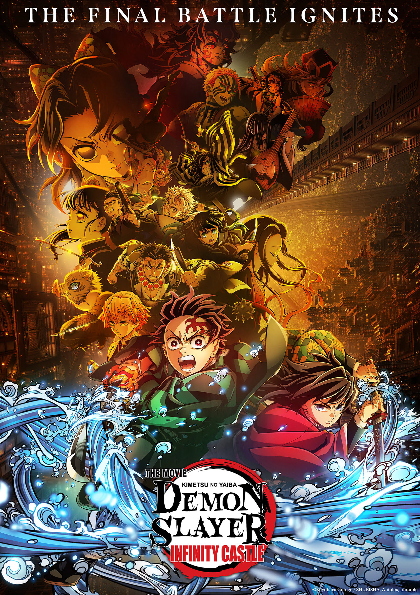
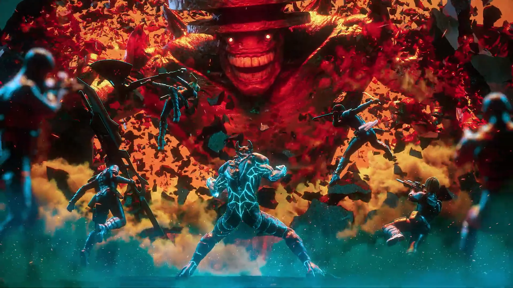

My Interests
The things that fascinate, inspire, and motivate me
🎬 Movies & TV Shows
I love storytelling through film and television
What I Watch
I enjoy a wide variety of movies and TV shows, from thrilling sci-fi adventures to heartwarming comedies. I love analyzing cinematography, character development, and storytelling techniques.
Current Favorites:
📺 TV Show/Series
One Piece
Genre: Anime/Adventure
Why I love it: Epic storyline and character development
🎥 Movie
Demon Slayer: Infinity Castle
Genre: Anime/Action
Why I love it: Amazing animation and emotional story
Favorite Genres:

Currently Watching:
- One Piece (Episode 1000+)
- Kaiju No. 8
- Various seasonal anime

📚 Books & Literature
Exploring worlds through the written word

Reading Stats 2025:
My Literary Journey
Reading has been my escape and education rolled into one. I love getting lost in different worlds, learning about diverse perspectives, and discovering new ideas through books.
📖 Fiction Favorites
- Dark Moth by Melanie Golding
- One Piece Manga by Eiichiro Oda
- Various Programming Books
📚 Non-Fiction Interests
- Atomic Habits by James Clear
- Programming & Technology Books
- Self-Development & Productivity
- Software Engineering Guides
Reading Goals:
- Read [#] books this year
- Explore more diverse authors
- Join a book club
- Start writing book reviews
💻 Technology & Innovation
Fascinated by how technology shapes our future
Tech That Excites Me
I'm passionate about understanding how technology works and how it can solve real-world problems. From coding to AI, I love exploring the digital world and its possibilities.
🤖 AI & Machine Learning
Exploring how computers can learn and think
- Following AI news and developments
- Experimenting with AI tools
- Learning about ethical AI
🌐 Web Development
Building websites and web applications
- Learning HTML, CSS, JavaScript
- Creating personal projects
- Understanding user experience
📱 Mobile Technology
The power of technology in our pockets
- Following mobile app trends
- Learning app development basics
- Understanding mobile UX design

Currently Learning:
🔬 Science & Nature
Curious about how the world works around us

Did You Know?
"The human brain contains approximately 86 billion neurons, each connected to thousands of others, creating more possible neural connections than there are stars in the observable universe!"
"A single teaspoon of neutron star material would weigh about 6 billion tons - that's roughly the same weight as Mount Everest compressed into a tiny space!"
"Octopuses have three hearts and blue blood! Two hearts pump blood to their gills, while the third pumps blood to the rest of their body."
Areas of Interest
Science helps us understand the incredible world we live in. I'm fascinated by discoveries that change how we see ourselves and our place in the universe.
🌌 Astronomy
The mysteries of space and cosmic phenomena
🧬 Biology
Life processes and living organisms
🌍 Environmental Science
Understanding and protecting our planet
🧪 Chemistry
The building blocks of matter and reactions
How I Explore Science:
- Watching science documentaries
- Following science news and breakthroughs
- Conducting simple experiments at home
- Visiting science museums and planetariums
- Reading popular science books
🎨 Music & Arts
Appreciating creativity in all its forms
Creative Inspirations
Art and music speak to me in ways that words sometimes can't. I love discovering new artists, understanding different art movements, and finding inspiration in creative expression.
🎵 Music Preferences
Current favorite genres: Classic, Afrobeats, K-Pop
Mood: Varies between chill classics and energetic K-Pop
🖼️ Visual Arts
- Painting & Drawing
- Photography
- Digital Art
- Sculpture
- Street Art
🏛️ Art History
Learning about different art movements and famous artists throughout history fascinates me, especially how art reflects culture and society.
Favorite period: Renaissance & Modern Art
Favorite artists: Leonardo da Vinci, Van Gogh
Did you know? The Mona Lisa has no eyebrows because it was fashionable in Renaissance Florence to shave them off!
Fun fact: Van Gogh only sold one painting during his lifetime, yet today his works are worth hundreds of millions!

Current Inspirations:
- Eiichiro Oda (One Piece creator) - Masterful storytelling
- Japanese anime art style & animation techniques
- Creating my own web development portfolio
- K-Pop music videos and their creative direction
- Basketball highlight reels and athletic artistry
- Afrobeats rhythms and cultural fusion
Future Goals & Dreams
📚 Academic Goals
- Maintain high grades in [favorite subject]
- Take advanced courses in [subject area]
- Participate in science fairs or competitions
- Join academic clubs and honor societies
💼 Career Aspirations
- Pursue a career in software engineering
- Find internships in tech companies
- Master JavaScript and full-stack development
- Network with professionals in the tech industry
🌍 Personal Growth
- Travel to [places you want to visit]
- Learn a new language
- Volunteer for causes I care about
- Develop leadership skills